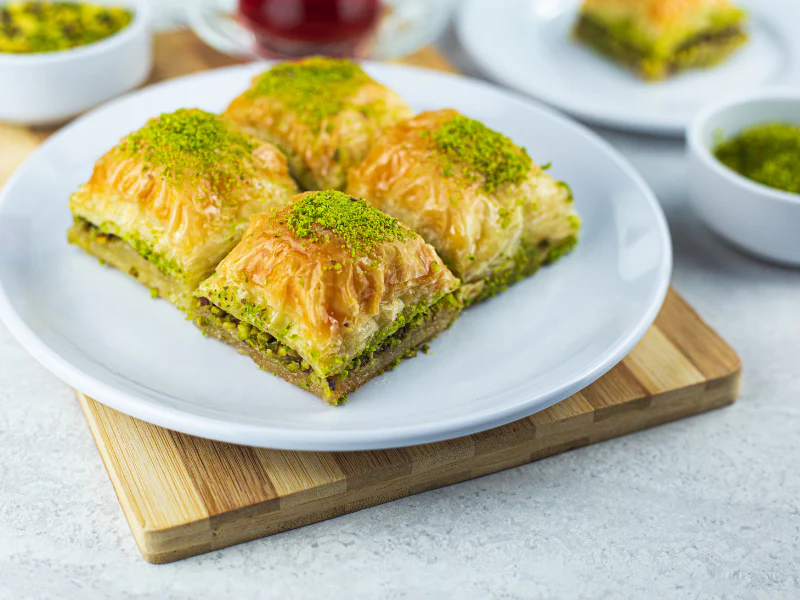

Baklava

Description
Baklava is a traditional pastry known for its sweet, rich flavor and flaky texture. It
consists of phyllo (or filo) dough, nuts, spices, and a sugary syrup.
Food historians think modern baklava may have been invented in Turkey during the Ottoman
Empire, then modified in Greece. However, the technique of layering unleavened bread with
nuts and honey can be traced back as far as the 8th century B.C.E. during the Assyrian Empire.
Ingredients
- Phyllo Dough
- Nuts
- Butter
- Cinnamon
- Water,Sugar,Vanilla, Honey
Steps
- Layer Phyllo with Nuts.
Stack eight sheets of phyllo dough, brushing with melted butter
between each layer, to create a sturdy base. Sprinkle it with a mixture of chopped nuts and
cinnamon. Top with two sheets of phyllo dough and follow with the nut mixture. Repeat this
process a few more times, until the nut mixture is gone. Top with about eight more layers of
phyllo, buttering each layer.
- Cut and Bake. Cut the baklava into diamond or square shapes. Be sure to cut all the way to
the bottom of the pan. Bake until golden and crisp.
- Finish with syrup. Boil water and sugar until sugar is melted. Add vanilla and honey.
Remove the baklava from the oven and immediately pour syrup over it. Let cool before serving.